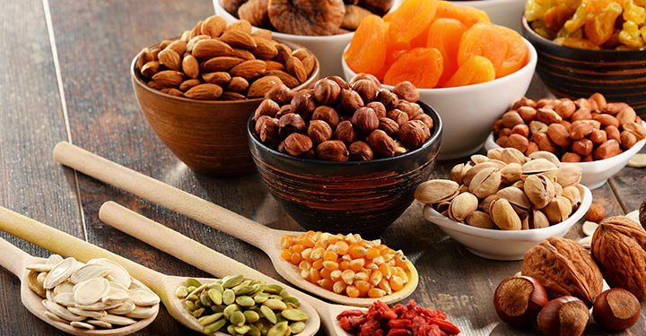
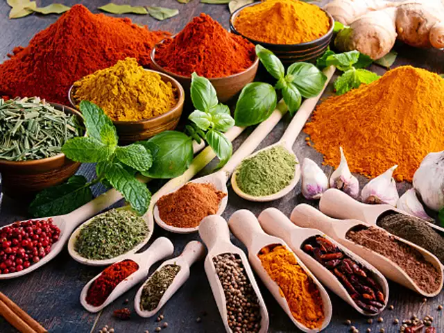
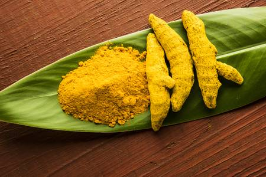
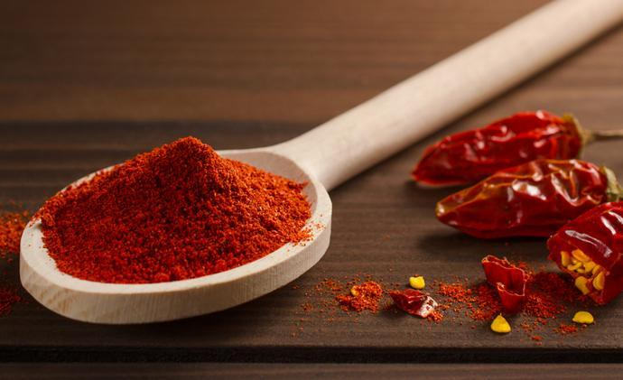
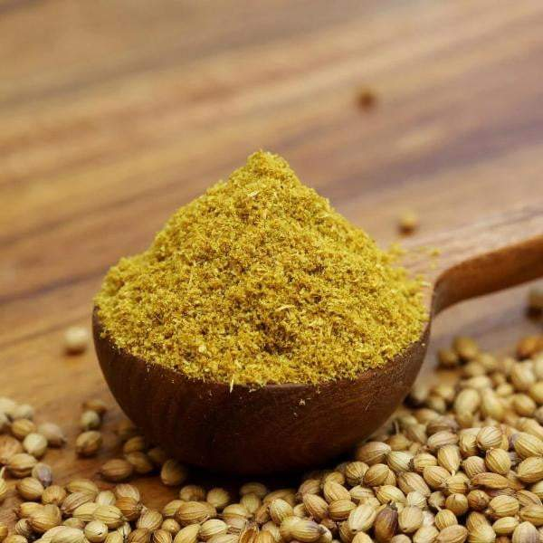
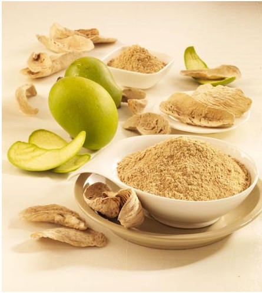
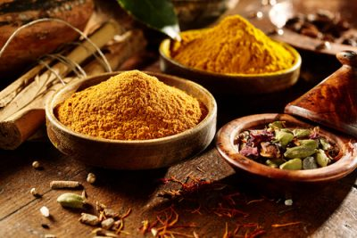
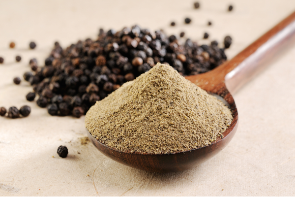
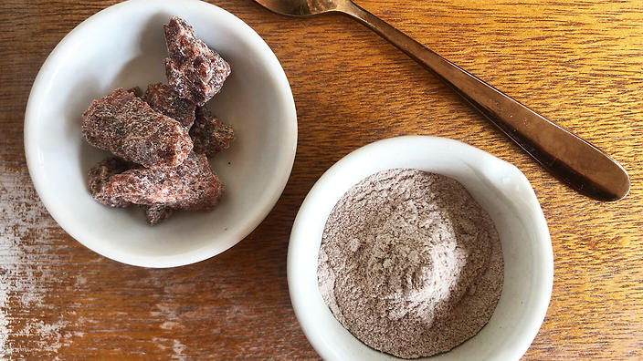
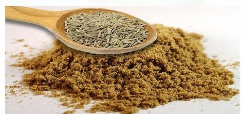

Dried fruit is fruit from which the majority of the original water content has been removed either naturally, through sun drying, or through the use of specialized dryers or dehydrators.Dried fruit has a long tradition of use dating back to the fourth millennium BC in Mesopotamia,and is prized because of its sweet taste,nutritive value,[1] and long shelf life.

A spice is a seed, fruit, root, bark, or other plant substance primarily used for flavoring, coloring or preserving food. Spices are distinguished from herbs, which are the leaves, flowers, or stems of plants used for flavoring or as a garnish. Many spices have antimicrobial properties,[1] which may explain why spices are more prominent in cuisines originating in warmer climates, where food spoilage is more likely, and why the use of spices is more common with meat, which is particularly susceptible to spoiling.[2] Spices are sometimes used in medicine, religious rituals, cosmetics or perfume production.

Our Varieties in Spices
Turmeric is the spice that gives curry its yellow color. It has been used in India for thousands of years as a spice and medicinal herb. Recently, science has started to back up what Indians have known for a long time — it really does contain compounds with medicinal properties.

Chili powder (also spelled chile, chilli, or, alternatively, powdered chili) is the dried, pulverized fruit of one or more varieties of chili pepper, sometimes with the addition of other spices (where it is also sometimes known as chili powder blend or chili seasoning mix).

Coriander, popularly known as dhania in India, is extensively used across various regional cuisines to flavour curries, stir fries, snacks, breakfast items – you name it! It is popular in Mexico and the south western part of USA too, where it is utilised in salsas and mixed greens to burritos and meat dishes.

Amchur Powder, which is also referred as mango powder, is one of the Indian fruity spices powder that is made from dried unripe green mangoes.Apart from adding flavour, colour and taste to the food, amchur powder comprises various health benefits. It contains many nutrients including vitamin A, E and C, and antioxidants, and is used in preparing many Ayurvedic medicines.

Spice mixes are blended spices or herbs. Blends such as chili powder, curry powder, herbes de Provence, garlic salt, and other seasoned salts are traditionally sold pre-made by grocers, and sometimes baking blends such as pumpkin pie spice are also available.

Black pepper (Piper nigrum) is a flowering vine in the family Piperaceae, cultivated for its fruit, known as a peppercorn, which is usually dried and used as a spice and seasoning. When fresh and fully mature, the fruit is about 5 mm (0.20 in) in diameter and dark red, and contains a single seed, like all drupes.

Kala namak or Karrupu Uppu is a kiln-fired rock salt used in South Asia with a sulphurous, pungent-smell. It is also known as "Himalayan black salt", Sulemani namak, bit lobon, kala noon, or pada loon and manufactured from the salts mined in the regions surrounding the Himalayas.

Cumin is a flowering plant in the family Apiaceae, native to southwestern Asia including the Middle East. Its seeds – each one contained within a fruit, which is dried – are used in the cuisines of many cultures in both whole and ground form.

.png)